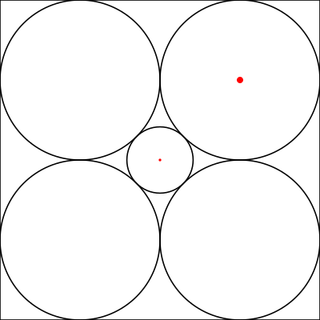

This is a simple mathematical thought experiment from Richard Hamming to demonstrate how poor our intuition for high dimensional spaces is. All that is needed is some basic, middle school level geometry and algebra.
Consider a 2x2 square centered at the origin. In each quadrant place circles as big as possible so that they fit in the square and don’t overlap. They’ll clearly have radius 1/2. See the image below. The question now is what’s the radius of the largest circle centered at the origin that doesn’t overlap the other circles.

It’s clear from symmetry that the inner circle is going to touch all the other circles at the same time, and it is clear that it is going to touch along the line from the origin to the center of one of the outer circles. So the radius of the inner circle, #r#, is just the distance from the origin to the center of one of the outer circles minus the radius of the outer circle, namely 1/2. As an equation:
#r = sqrt(1/2^2 + 1/2^2) - 1/2 = sqrt(2)/2 - 1/2 ~~ 0.207106781#
Now if we go to three dimensions we’ll have eight circles instead of four, but everything else is the same except the distances will now be #sqrt(1/2^2 + 1/2^2 + 1/2^2)#. It’s clear that the only difference for varying dimensions is that in dimension #n# we’ll have #n# #1/2^2# terms under the square root sign. So the general solution is easily shown to be:
#r = sqrt(n)/2 - 1/2#
You should be weirded out now. If you aren’t, here’s a hint: what happens when #n = 10#? Here’s another hint: what happens as #n# approaches #oo#?
3blue1brown has a video describing this example and presenting one way of regaining intuition about it.